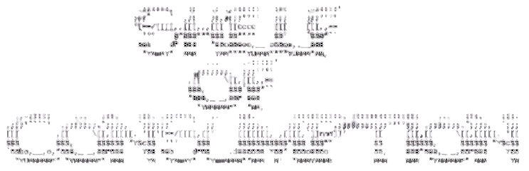

GAMES
2025
- metroid prime 2 echoes
- platform 8
- exit 8
- hollow knight
- skate (2025)
- hyper light drifter: definitive edition
- shovel knight: treasure trove
- gato roboto
- elden rign: nightreign
- sekiro: shadows die twice
FILM
2025
- silent hill
- dinner in america
- jason X
- friday the 13th part 8 - jason takes manhattan
- the substance
- talk to me
- poltergeist [original]
- dexter s1
- orwell: 2+2=5
- angels and demons movie
- dexter ressurections s1
- drag race seasons 5,7, and 17
- drag race all stars season 3, and 10
BOOKS
2026
- masters of doom - david kushner
2025
- absolute batman issues 1-6
- project hail mary - andy weir
- system collapse - martha wells
- blood over bright haven - m.l. wang
- fugitive telemetry - martha wells
- dungeon crawler carl - matt dinniman
- zen mind, beginners mind - shunryu suzuki
- a psalm for the wild built - becky chambers
- network effect - martha wells
- the hunger games - suzanne collins
- one robe, one bowl: the zen poetry of ryokan
- the will of the many - james islington
- mickey7 - edward ashton
- mountain tasting: zen haiku by santoka taneda
- wabi sabi: for artists, designers, poets, and philosophers - lenoard koren
2024
- i have no mouth and i must scream - harlan ellison
- blood, sweat, and pixels - jason schreir
- shuna's journey - hayao miyazaki
- lord of the flies - william golding
- look back - tatsuki fujimoto
- the hobbit - j.r.r. tolkien
- alice - christina henry
- the accomplice - curtis jackson aka, 50 cent
- haiku: a poets guide - lee gurga
- crying in h mart - michelle zauner
- annihilation - jeff vandermeer
- meditations - marcus aurelius
- red rising - pierce brown
- goodbye, things: the new japanese minimalism - fumio sasaki
- a boy and his dog - harlan ellison
- how lucky - will leitch
- cuckoo - martin felker gretchen
- hunters of dune - brian herbert
- enders game - orson scott card
- convenience store woman - sayaka murata
- native tongue - carl hiaasen
- mob psycho #7-12 - ONE
- before chainsaw man 17-21 - tatsuki fujimoto
- dearly - margaret atwood
- vicious - v.e. schwab
- mob psycho #2-6 - ONE
- mashle #1 - hajime komoto
- read this if you want to take great photographs - henry carroll
- the poetry home repair manual - ted kooser
- star wars: darth bane #1 - drew karpyshyn
- mob psycho #1 - ONE
- war of the worlds - h.g. wells
- starship troopers - robert heinlein
- talia - daniel j. volpe
- the four agreements - miguel ruiz
- compulsory(murderbot diaries 0.5) - martha wells
- the martian - andy weir
- home:habitat,range,niche,territory (murderbot diaries 4.5) - martha wells
- exit strategy (murderbot diaries #4) - martha wells
- rogue protocol (murderbot diaries #3) - martha wells
- the art of peace - morihei ueshiba
- dune graphic novel #1 - brian fuckin herbert
- the art of war - sun tzu
- priory of the orange tree - samantha shannon
- vinland saga omnibus, vol 1 - makoto yukimura
- artificial condition, murderbot diaries #2 - martha wells
- chapterhouse:dune - frank herbert
- all systems red, murderbot diaries #1 - martha wells
- harry potter and the deathly hallows
- the song of achilles - madeline miller
- heretics of dune - frank herbert
- twilight - stephenie meyer
- yellowface - r.f. kuang
- harry potter and the half-blood prince
2023
- ready player one - ernest cline
- a die hard christmas - doogie horner
- soul eater - lily mayne
- the seven spirtual laws of success - deepak chopra
- harry potter and the order of the phoenix
- animal farm - george orwell
- harry potter and the goblet of fire
- the handmaids tale - margaret atwood
- harry potter and the prisoner of azkaban
- the raven - edgar allen poe
- fahrenheit 451 - ray bradbury
- harry potter and the chamber of secrets
- im glad my mom died - jennette mccurdy
- harry potter and the sorcerers stone
- the woman in me - britney spears
- 1984 - george orwell
- pageboy - elliot page
- god emperor of dune - frank herbert
- children of dune - frank herbert
- dune messiah - frank herbert
- dune - frank herbert